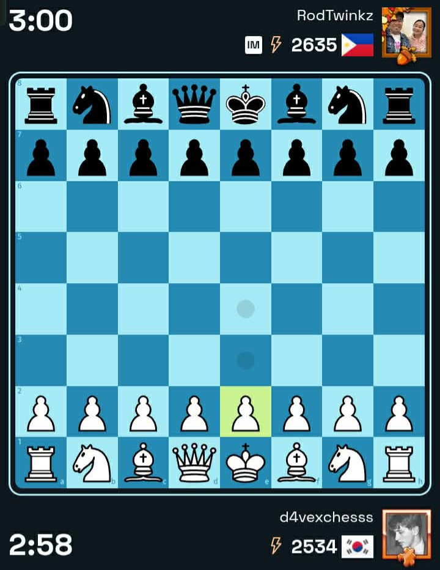
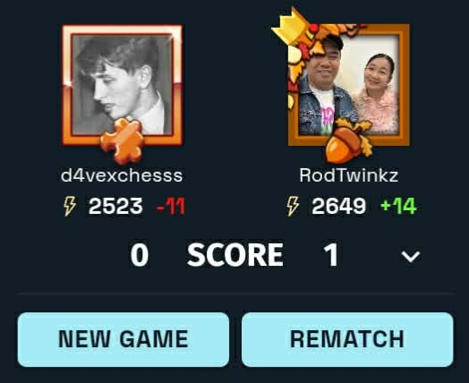
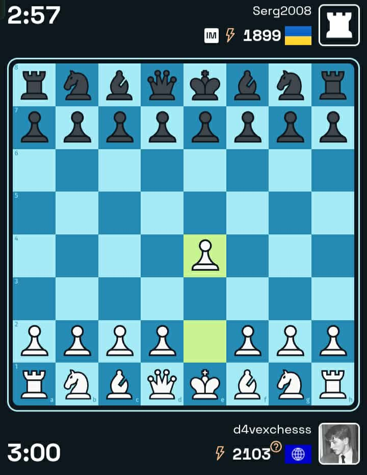
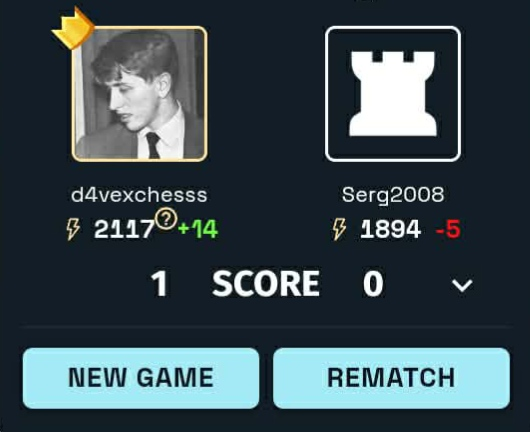
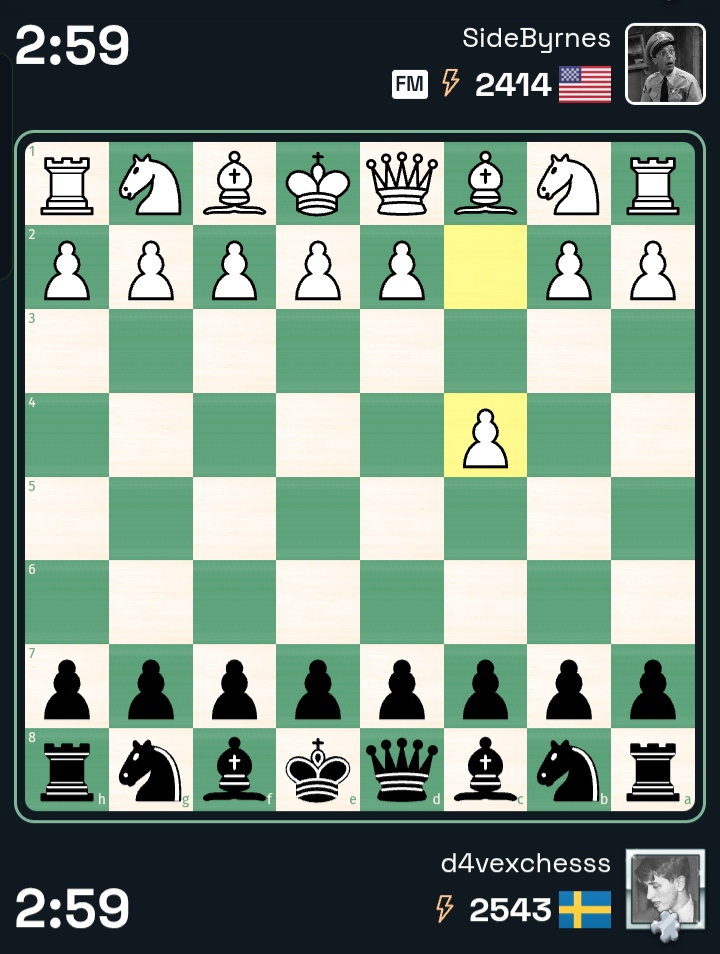
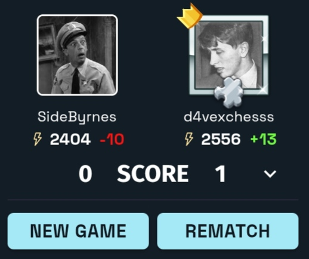
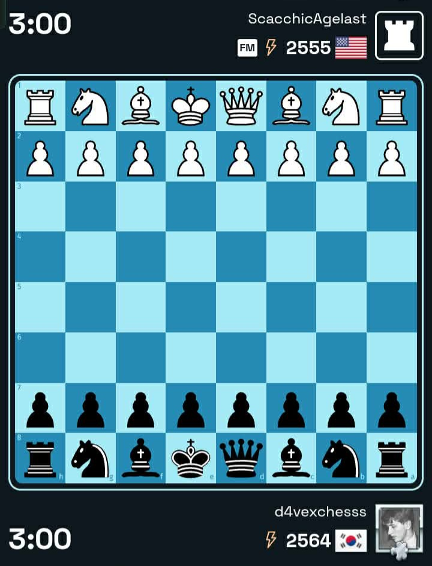
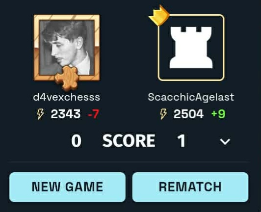
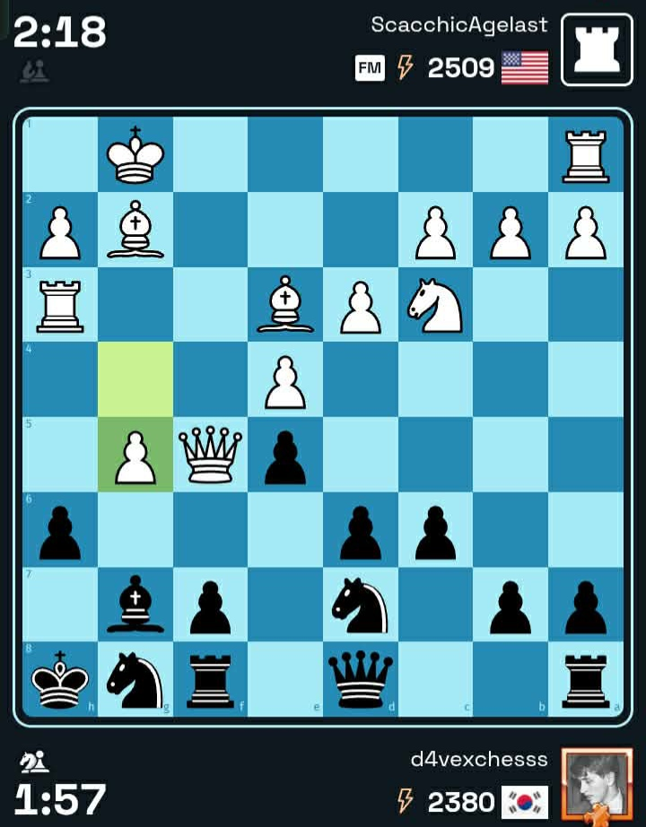
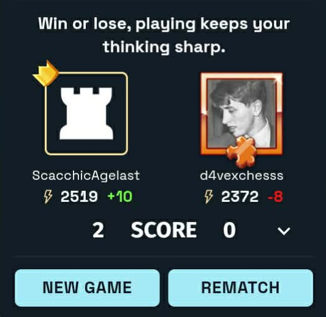

My Chess Journey
I began playing chess around 2023, though my practice was inconsistent at the time. My rating on Chess.com was just over 1100, and I had never played an over the board (OTB) game. Eventually, I lost access to my old account because I forgot the password.
In 2025, I returned to chess more seriously and started studying from a book, Bobby Fischer Teaches Chess. Around the same time, I discovered the Internet Chess Club (ICC) and began playing there occasionally. That year, I reached a blitz rating of approximately 2625 and even managed to defeat some titled players online.
This Chess.com account is new, which explains why my current rating is still at a lower level. My goal is to reach a rating of 2000, and I plan to achieve it as I continue dedicating time to the game.
Titled Players I've Faced









